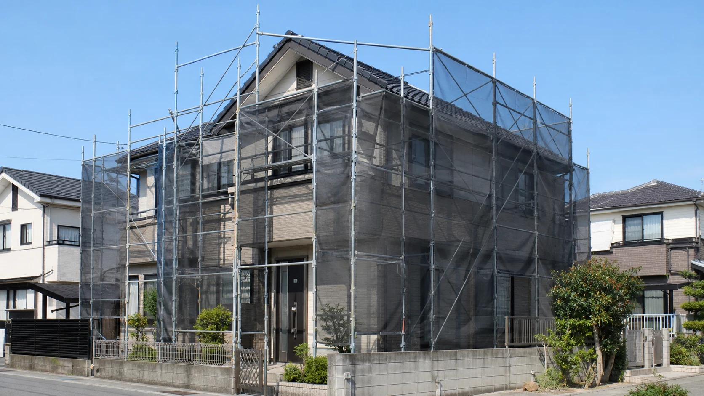
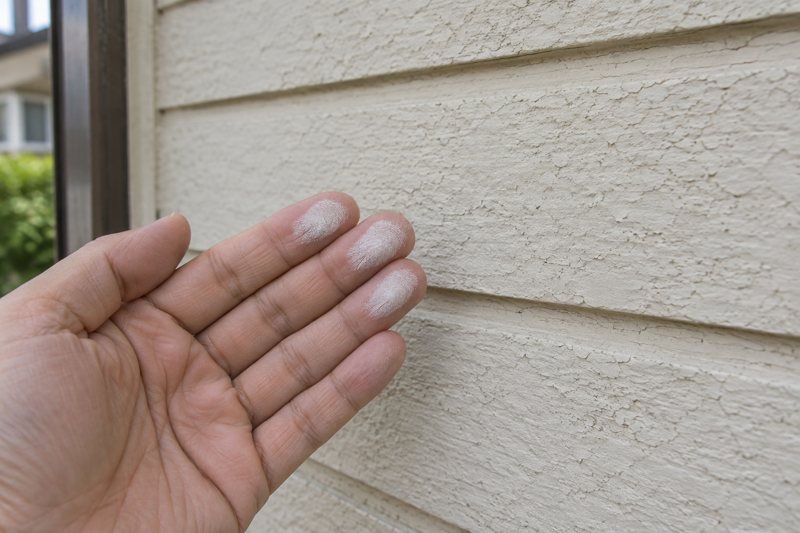

「まだ新しい家だから、点検はずっと先でいい」。そう思っていませんか。住んで一年、四季を経験すると、冬の結露や窓の動き、水回りの湿りなど、引き渡しの日には気づかなかったことが見えてきます。
気になる変化を写真に残し、施工店へ相談する。そんな小さな習慣が、後の修繕計画につながります。1年、5年、9年、10年、20年、30年。それぞれの節目で、何を見ておくとよいのでしょうか。
戸建てとマンションの点検項目を年数別に整理。屋根・外壁・窓・給湯器の変化を記録し、保証期限前の相談と将来の修繕計画につなげます。
公開予定日：2026年10月29日
点検・保証・住まい方 文｜エイスケ（住宅と教育の専門家）
文｜エイスケ（住宅と教育の専門家）
「まだ新しい家だから、点検はずっと先でいい」。そう思っていませんか。住んで一年、四季を経験すると、冬の結露や窓の動き、水回りの湿りなど、引き渡しの日には気づかなかったことが見えてきます。
気になる変化を写真に残し、施工店へ相談する。そんな小さな習慣が、後の修繕計画につながります。1年、5年、9年、10年、20年、30年。それぞれの節目で、何を見ておくとよいのでしょうか。
洗面台の下が湿っている、排水の音がいつもと違う、窓の開け閉めが重い。気づいたら、場所と日付に加え、「雨の翌日だけ」「お湯を出した時だけ」と、起こる状況も書き留めましょう。相談するときの説明が具体的になります。
水漏れは、次の定期点検を待たずに連絡してください。被害が広がる前に対応できれば、補修費だけでなく、設備を使えない期間や工事の段取りも抑えやすくなります。
自分で見るのは、地上や室内の安全な位置から分かる範囲まで。屋根に上る、床下に無理に入る、設備を分解するといった確認は、専門業者に任せましょう。
1年、5年、10年と節目を決めておくと、点検や積立の予定を立てやすくなります。次の表を手がかりに、メーカーの点検案内や施工店・管理組合の修繕計画に合わせて、自宅の予定を書き込んでみましょう。
| 節目 | 戸建てで確認 | マンションで確認 | 共通の準備 |
|---|---|---|---|
| 1年目 | 窓・建具・室内のシミ、水回り | 専有部の建具・給排水。外壁や共用部の異変は管理窓口へ | 不具合の写真、保証書、点検予定をまとめる |
| 5年目 | 地上から外壁、目地、雨どい、窓周りの変化 | 専有部の水回り。窓・バルコニーの扱いを規約で確認 | 施工店の点検計画と、未対応の相談を確認 |
| 9年目 | 構造・雨漏りに関する気になる点を施工店へ | 専有・共用の窓口を分け、管理組合の点検情報も確認 | 10年の責任期間の起算日と連絡先を確認 |
| 10年目 | 屋根・外壁・防水を専門家と評価 | 大規模修繕計画と専有部設備の更新時期を照合 | 給湯器などの使用年数と点検案内を確認 |
| 20年目 | これまでの補修結果、配管・設備・防水の計画を更新 | 共用配管工事と専有部改修の時期・工事条件 | 交換履歴に加え、家族構成や使い方の変化も相談 |
| 30年目 | 構造や劣化状況を調べ、次の10年の修繕計画へ | 長期修繕計画、積立金、専有部の更新計画 | 大きな工事は段階実施も比較し、資金計画を見直す |
マンションの窓や玄関扉、バルコニーの工事は、管理規約と申請手順を先に確認します。また、設備の使用年数は築年数と分け、交換した年から数えましょう。
外壁に触れた手に白い粉が付く「チョーキング」、目地の割れ、窓周りのシミ。気づいた場所を同じ位置から撮影しておくと、前回からの変化を施工店に伝えやすくなります。塗り替えの時期や範囲は、塗装と下地の状態を調べて判断します。

写真はチョーキングを説明するAI生成イメージです。
| 場所 | 安全な位置から気づける変化 | 相談するときに伝えること |
|---|---|---|
| 屋根・外壁 | 室内の雨ジミ、地上から見える割れ・剥がれ | 雨の強さ、発生時期、写真。高所の確認は依頼 |
| 窓 | 開閉の重さ、雨の後の湿り、結露 | どの窓か、雨天か室内結露か、頻度 |
| 給湯器 | 温度の不安定、エラー、水漏れ、異音 | 型番、使用開始年、エラー表示。異臭・煙は使用中止して窓口へ |
| 水回り | 収納内の湿り、排水の遅さ | 発生場所、いつからか、使用時との関係 |
ガス給湯器は10年前後を一つの目安に、メーカーの点検案内を確認しましょう。NITEは、長期間使った製品の点検を勧めています。[1]異音や水漏れ、エラーが出たら、年数にかかわらず相談してください。
AIには、撮影した写真から気になる箇所や施工店への質問を整理してもらえます。整理した質問と写真を施工店へ渡し、壁の内部や漏水の原因は現地で調べてもらいましょう。
新築住宅の10年間の瑕疵担保責任は、構造耐力上主要な部分と、雨水の浸入を防ぐ部分が対象です。キッチンや給湯器などの設備は、それぞれの保証書で対象と期間を確認します。[2]
キッチンや浴室の保証書を開き、「いつから、何年間、どの部分が対象か」を書き出してみましょう。組み込まれたコンロや換気機器などに別の保証書があれば、一緒に整理します。分かりにくいところは、引き渡しを担当した施工店に確認しておくと安心です。
1年目には保証書を見直し、不具合は短い保証の満了前に相談する。9年目には、10年の責任期間の起算日と、構造や雨漏りに関する気がかりを確認する。この二つを予定に入れておくと、相談の機会を逃しにくくなります。
家の前で、年に一度、家族写真を撮る日をつくってみませんか。思い出と一緒に住まいの姿も残せます。気になる場所は近くからも撮り、点検・修繕の記録に日付を添えておきましょう。
予算は「不具合への備え」「予定している設備更新」「暮らしを楽しむ改修」に分けます。例えば120万円を5年で準備するなら、月2万円の積立です。目標額は工事見積もりと予備費をもとに決め、定期的に見直しましょう。
私自身は、修理窓口や部品供給を確かめやすい定番商品を候補にしています。国内・海外という区分だけで選ばず、保証、修理窓口、部品の保有方針を確認する。そのうえで、好きな照明や設備を選ぶ楽しみも持ちたいと思います。
20年もたてば、子どもの独立などで部屋の使い方が変わる家庭もあるでしょう。設備交換の機会に、夫婦二人で使う台所や趣味の場所として考え直してみるのも一案です。
省エネ性能も、今の機器と候補機種を比べる材料になります。使用量や工事費も並べて、暮らしに合うものを選びましょう。点検と記録、資金の準備があれば、必要な修繕に合わせて、住まいをもっと楽しむ工夫も考えられます。
四季を通して気づいた不具合を施工店へ相談する機会になります。保証書も見直しましょう。
いいえ。10年の責任期間の起算日と、構造や雨漏りに関する気になる点を確認する節目です。
10年前後を目安に点検案内を確認し、使っている機器の状態を見てもらいましょう。交換時期は点検結果をもとに相談します。
外壁の変化を施工店に相談するサインです。写真を残し、塗装や下地の状態を調べてもらいましょう。
AIで気になる箇所や質問を整理し、写真と一緒に専門家へ相談しましょう。内部の状態や原因は、現地での確認が必要です。
管理規約や共用部分の扱い、申請手順を確認してから計画します。
この記事を書いた人｜エイスケ
1986年生まれ。実家の工務店・不動産に10年間従事したのち、教育の世界へ。住宅と教育、両方の視点から「豊かな暮らし」をテーマに執筆します。※本コラムは筆者個人の見解・経験に基づくものです。最終的な判断は各分野の専門家にご相談ください。